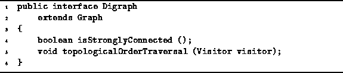

Data Structures and Algorithms
with Object-Oriented Design Patterns in Java
Data Structures and Algorithms
with Object-Oriented Design Patterns in Java
Program  defines the Digraph interface.
The Digraph interface extends the Graph interface
defined in Program .
defines the Digraph interface.
The Digraph interface extends the Graph interface
defined in Program .

Program: Digraph interface.
The Digraph interface adds the following methods which apply only to directed graphs to the inherited interface:
.
 Copyright © 1998 by Bruno R. Preiss, P.Eng. All rights reserved.
Copyright © 1998 by Bruno R. Preiss, P.Eng. All rights reserved.